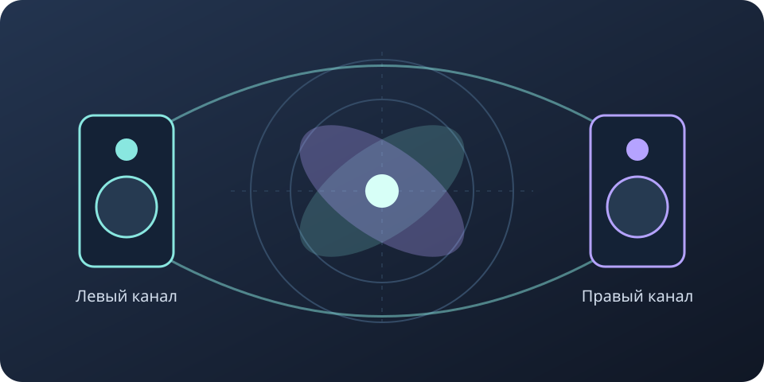

Панорама
Регулятор панорамы перемещает звук между левым и правым каналом. Голос и бас часто оставляют ближе к центру.
Сведение музыки
В наушниках часть звуков может быть левее, часть — правее. Такое расположение помогает инструментам меньше мешать друг другу.

Регулятор панорамы перемещает звук между левым и правым каналом. Голос и бас часто оставляют ближе к центру.
Широкий звук окружает слушателя. Но чрезмерное расширение иногда делает его слабее при объединении каналов.
Включи моно — объединение левого и правого каналов. Если инструмент резко пропал, проверь эффекты расширения.
Сначала слушай всю песню тихо. Затем переключись в один канал и обрати внимание на голос, бас и ударные. Если звук заметно изменился, уменьши расширение и сравни снова.
Пройти проверку →